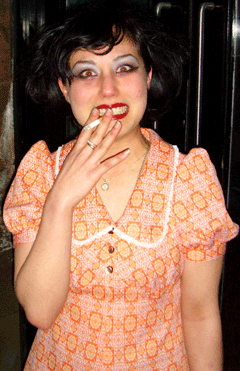

UNDERDOX feiert "Halbzeit"!
UNDERDOX - dokument und experiment, das internationale Festival für den experimentellen und künstlerischen Film in München, feiert im April "Halbzeit".
Mit zwei Programmen im Filmmuseum und Werkstattkino geben wir Rückblick, Einblick und Ausblick auf vergangene und kommende UNDERDOX-Filme.
UNDERDOX - halbzeit im filmmuseum, Do., 10.4., 19:00 Uhr
Wir zeigen als deutsche Premiere den preisgekrönten chinesischen Independent-Dokumentarfilm
MENG YOU (DREAM WALKING) von Huang Wenhai, China 2004, 86 Min., OmeU
Davor als exklusive Weltpremiere: das neue Video der Münchner Künstlerin AnnaMcCarthy
GLASGOW: A TRUE AND LOVE STORY (EINE WAHRE LIEBESERKLÄRUNG AN DIE STADT GLASGOW), ca. 30 Min., OF
Schlechte Aufnahmen mit Handys undFotokameras vermischen sich ungeniert mitdurchdachten, malerischen Bildern. Diese dokumentieren auf liebevolle, sehr persönliche und abstrahierte Art das Leben mehrerer Musiker und Künstler in Glasgow und deren Umgebung. Der Film stellt Architektur und Stadtlandschaften einheimischen Musikern gegenüber und analysiert dadurch deren gegenseitige Beeinflussung. Die Kamera führt durch dreckige Clubs, Einkaufszentren, Galerien, dunkle Wohnzimmer und U-Bahn-Schächte und sammelt Bilder, die ineinander übergehen, als wären sie eins.
Ein Erzähler begleitet die wirren Bilder und erzählt im Glasgower Akzent seine eigenen Anekdoten und Gedanken zur Gewalt, Kreativität und Wahnsinn innerhalb dieser Stadt. Diese werden willkürlich von seinen eigenen musikalischen Einlagen unterbrochen. Der Erzähler selber ist Musiker und wohnte nie außerhalb der Stadtgrenzen von Glasgow.
UNDERDOX - salon im werkstattkino, Sa. 12.4., 22:30 Uhr
Am Samstag, 12. April um 22:30 Uhr zeigen wir in einem gebündelten Programm noch einmal (fast) ALLE KÜNSTLERVIDEOS der UNDERDOX-Edition 2007, mit Videos von Jutta Burkhardt, Shirin Damerji, Sil Egger, Evi Europa, Angela Fechter, Isabel Haase, Daniel Kalafat-Müller, Anna McCarthy, Cora Piantoni, Oliver Pietsch, Gisbert Stach.
Bis bald bei UNDERDOX !
Die Underdox-Initiatoren
Dunja Bialas
Bernd Brehmer
|